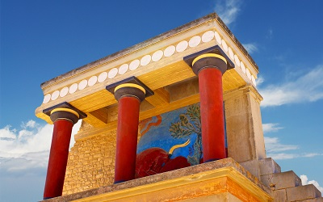
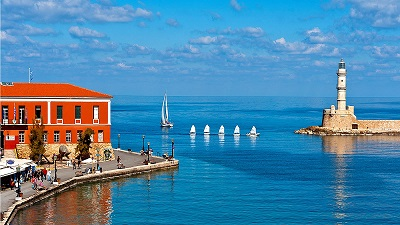

Crete is the most southern region of Greece and Europe. It is the largest Greek island and one of the largest in the Mediterranean basin. Separating the Aegean Sea from the Libyan sea it marks a physical boundary between Europe and Africa.
Heraklion is the largest urban centre in Crete, the capital of the region and the economic centre of the island. The first European civilisation, the Minoan civilization, flourished on this land 5000 years ago and can still be experienced today by visiting the ancient palace of Knossos and the Archeological Museum of Heraklion. Currently the population of the city of Heraklion is approximately 150.000 people. It is a very dynamic and cosmopolitan town, particularly during the summer period when thousands of visitors can be seen shopping in the market or visiting the museums and other places of interest. During the last 20 years the city has also made remarkable advances in the academic and technological fields as it hosts the University of Crete and the Foundation of Research and Technology Hellas.

The climate in Crete is one of the mildest and healthiest in Europe. On average, winter in Crete is mild and summer warm and sunny. Average year temperature is 19°C. During May, still technically spring is considered a summer month by locals and tourists Average daytime temperature rises up to an inviting 24 degrees Celsius with highs going a bit above that figure and lows rarely dropping below 15 degrees. Local time is +2 GMT (or +1 CET).
Diverse landscape is typical on the island. The magnificent Lefka Ori (White Mountains), Psiloritis and Dikti rise in the centre of the island. There are several fertile plateaus, with the Lassithi plateau being the most prominent amongst them. Parts of the island are split by deep gorges, such as the famous Samaria Gorge. Imposing mountains and rocky terrain alternate with a coastline full of astounding beaches, some secluded, others long and sandy, all with crystal clear waters.

Crete is also renowned for its variety of vegetation, particularly famous for olive trees, orange groves, vineyards and vegetable gardens. Medicinal herbs and fragrant shrubs -laudanum, dittany, marjoram and thyme - grow in rocky areas and the mountain peaks host the "Kri-Kri", the Cretan Ibex, a protected species you might encounter wondering in the National Reserve of Samaria Gorge.
This island's fertile soil and towering peaks witnessed the development of the Minoan civilization (2800-1150 B.C.), one of the most important in the history of mankind. The Minoans built the famous palatial centers of Knossos, Phaistos, Malia, Zakros, and others.
Another characteristic of Crete is the exceptionally hospitable, independent, and proud attitude of the locals. Walk into a traditional village and they will invite you to sit and eat with them and offer you "raki", the local spirit. Taste the Cretan Cuisine, which is considered as one of the world's healthiest, listen to the sound of traditional lyra playing local music, be amazed by the scenery.
Crete is an ideal resort for extending your stay for holidays!